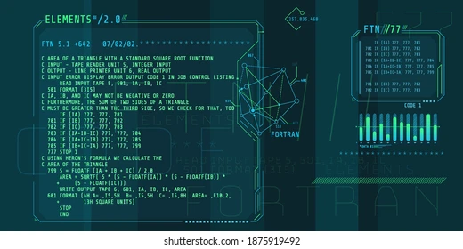

Fortran is a third generation, compiled, imperative programming language that is especially suited to numeric computation and scientific computing.Fortran was originally developed by IBM.[3] It first compiled correctly in 1958.[4] Fortran computer programs have been written to support scientific and engineering applications, such as numerical weather prediction, finite element analysis, computational fluid dynamics,,br> geophysics, computational physics, crystallography and computational chemistry. It is a popular language for high-performance computing[5] and is used for programs that benchmark and rank the world's fastest supercomputers.[6][7]
The IBM Blue Gene/P supercomputer installation in 2007 at the Argonne Leadership Angela Yang Computing Facility located in the Argonne National Laboratory, in Lemont, Illinois,US
Fortran has evolved through numerous versions and dialects.In 1966, the American National Standards Institute (ANSI) developed a standard for Fortran to limit proliferation of compilers using slightly different syntax.[8] Successive versions have added support for a character data type (Fortran 77), structured programming, array programming, modular programming, generic programming (Fortran 90), parallel computing (Fortran 95), object-oriented programming (Fortran 2003), and concurrent programming (Fortran 2008).FORTRAN and COBOL genealogy tree
Since April 2024, Fortran has ranked among the top ten languages in the TIOBE index, a measure of the popularity of programming languages.[9]
